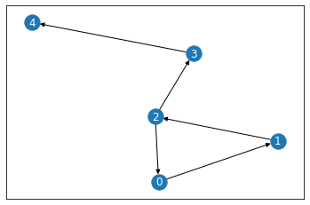

Hello World Neo4j#
This notebook walks through basic code examples of integrating xGT with Neo4j, pandas, networkx, and jgraph
xgt_connector#
xgt_connector can be installed with: python -m pip install xgt_connector
Connect#
Connect to xGT and the Neo4j database
from xgt_connector import Neo4jConnector, Neo4jDriver
import xgt
xgt_server = xgt.Connection()
database = "test"
neo4j_server = Neo4jDriver(auth=('neo4j', 'foo'), database=database)
c=Neo4jConnector(xgt_server, neo4j_server)
neo4j_server.query("MATCH (n) DETACH DELETE n").finalize()
Create a graph in Neo4j#
names = ["Nicole", "Nathan", "Bishop", "Ashley", "Joe"]
neo4j_server.query(f'create (a:Person{{id:0, name:"{names[0]}"}})').finalize()
for i in range(0, len(names) - 1):
neo4j_server.query(f'match(a:Person) where a.id = {i} create (a)-[:Knows]->(:Person{{id:{i + 1},name:"{names[i + 1]}"}})').finalize()
neo4j_server.query('match(a:Person), (b:Person) where a.id = 2 and b.id = 0 create (a)-[:Knows]->(b)').finalize()
Get Neo4j schema info#
c.neo4j_relationship_types
['Knows']
c.neo4j_node_labels
['Person']
c.neo4j_edges
{'Knows': {'schema': {},
'endpoints': {('Person', 'Person')},
'sources': {'Person'},
'targets': {'Person'}}}
c.neo4j_nodes
{'Person': {'name': 'String', 'id': 'Long'}}
Transfer data to xGT#
Transfers data associated with edge, Knows, including the associated vertices
c.transfer_to_xgt(edges=["Knows"])
Transferring: [############################################################] 10/10 in 0:00:00.3s (31.5/s, eta: 0:00:00.0s)
Cypher#
Retrieve python query results
query = "match(a)-->()-->()-->(a) return a.name"
job = xgt_server.run_job(query)
print("xGT found the following relationship triangle: " + ', '.join(str(row[0]) for row in job.get_data()))
xGT found the following relationship triangle: Bishop, Nathan, Nicole
Save results to disk#
query = "match(a)-->()-->()-->(a) return a.name into results"
xgt_server.run_job(query)
xgt_server.get_frame("results").save("results.csv")
xgt_server.drop_frame("results")
True
Pandas DataFrames#
Convert results into a pandas dataframe
job.get_data_pandas()
| a_name | |
|---|---|
| 0 | Bishop |
| 1 | Nathan |
| 2 | Nicole |
NetworkX#
Getting data into networkx
import networkx as nx
edge_data = [tuple(x) for x in xgt_server.get_frame("Knows").get_data()]
vertex_data = xgt_server.get_frame("Person").get_data()
dg = nx.DiGraph()
dg.add_edges_from(edge_data)
nx.set_node_attributes(dg, {row[0]:row[1] for row in vertex_data}, name="name")
nx.draw_networkx(dg, font_color='white')

dg.nodes(data=True)
NodeDataView({0: {'name': 'Nicole'}, 1: {'name': 'Nathan'}, 2: {'name': 'Bishop'}, 3: {'name': 'Ashley'}, 4: {'name': 'Joe'}})
nx.degree(dg)
DiDegreeView({0: 2, 1: 2, 2: 3, 3: 2, 4: 1})
jgraph#
Visualizing the graph with jgraph
import jgraph
data = xgt_server.run_job("match(a)-->(b) return a.id, b.id").get_data()
data = [tuple(x) for x in data]
jgraph.draw(data)